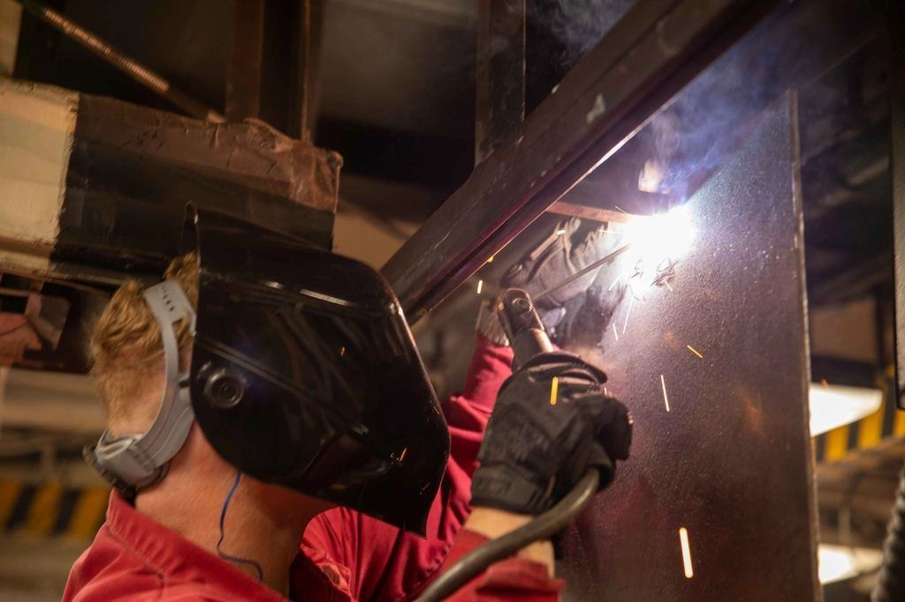

Ett parti ska överleva tre kök
Kök och badrum byts ungefär vart tjugonde år, men ett stålparti kan sitta kvar i sjuttio. Därför fäster vi partierna så att de går att demontera och flytta, och använder glas som kan bytas utan att stålet påverkas. Lacken är vattenbaserad och fri från lösningsmedel.
Ett parti ska överleva tre kök
Kök och badrum byts ungefär vart tjugonde år, men ett stålparti kan sitta kvar i sjuttio. Därför fäster vi partierna så att de går att demontera och flytta, och använder glas som kan bytas utan att stålet påverkas. Lacken är vattenbaserad och fri från lösningsmedel.
- 70 årberäknad livslängd för stålramen
- 100 %demonterbara och flyttbara partier
- 0lösningsmedel i vår lack

Provat för brand, ljud och glas
- Medlem i GlasbranschföreningenVi följer branschens regler för val och montage av säkerhetsglas i bostäder.
- Brandklass EI 30Brandklassade partier i ett provat profilsystem för trapphus och korridorer.
- EN 1090-1, EXC1CE-märkning av stålpartier och dörrar med bärande funktion.
- Ljudprovade partierPartier med ljudglas provade till Rw 38 dB för mötesrum och sovrum.

Svetsa så att ingen ser fogen
Vi letar sällan, men när vi gör det söker vi en svetsare med tålamod för tunnplåt och osynliga fogar. Du får arbeta med hela kedjan från mätning till montage i hem där kunderna ofta bjuder på kaffe.
Varje parti signeras med svetsarens initialer på insidan av den nedre profilen.